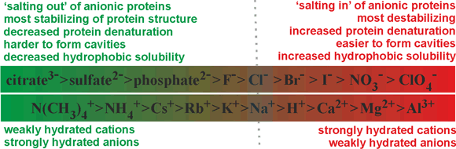
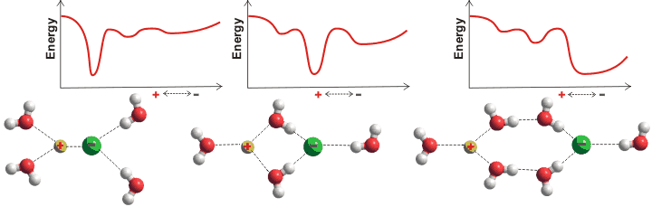
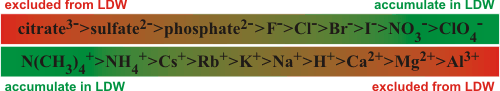

Franz Hofmeister plaque in Prague
, who carried out research in this building, predicted that amino acids in proteins are connected by a peptide bond and, in 1888, derived the lyotropic (Hofmeister) series of ions'")
The Hofmeister series is the ordering of ions in terms of their ability to affect the solubility of proteins.
 Rationale
Rationale
 Thermodynamic properties
Thermodynamic properties
 Effect on physical properties
Effect on physical properties
 Effect on solubility, ion pairs
Effect on solubility, ion pairs
 Stabilization of proteins
Stabilization of proteins
 Hydrophobic and hydrophilic associations
Hydrophobic and hydrophilic associations
 The effect on biphasic partitioning
The effect on biphasic partitioning
 The Jones-Dole
expression
The Jones-Dole
expression
'On perusal of the numerous articles on the physiological effect of salts,
one repeatedly encounters the same concept'
Franz Hofmeister 1888
The effects of ions on biological and chemical processes in aqueous solution, f at sufficient concentration (>10 mM; one ion per 6000 water molecules), usually depend on the particular ions involved. At similar temperatures, some salts (Mg2+, Al3+) make water more viscous, while others (Cs+, NH4+) make it less viscous (see also kosmotropes and chaotropes). These specific ion effects make up the Hofmeister phenomena [1827, 2225, 2924, 3927]. g The Hofmeister series [85], below, originates from the empirical and qualitative ranking of various ions toward their ability to precipitate a mixture of hen egg white proteins.
Anions: SO42− > HPO42 -> acetate− > Cl− > NO3−
Cations:
Mg2+ > Li+ > Na+ = K+ > NH4+
Note (i) that the ability to precipitate protein(s) depends on the protein(s) present, (ii) that some proteins exhibit opposite Hofmeister series behavior to others (which may be due to the protein's net charge [812] and the ionic strength of the solution [1606]; ovalbumin being negatively charged in the key experiments) and (iii) the order of some of the ions may be reversed in some series depending on the application, the counter-ions used, the pH, and any ion-specific factors present. Always note the application, conditions, and method of comparison when examining the published 'Hofmeister series'. Experiments into Hofmeister (ion-specific) effects have been criticized in that they often neglect the (possibly) confounding effects of the concentration of the ions (including counter-ions) present, the presence of other ions such as buffers, pH, and the temperature [1463]. Such effects must be taken into account if the relative effectiveness of the ions in any process is to be compared. The complete original series [85], given below in terms of molar effect, used a mixture of egg white proteins and did not control for pH changes.
Anions: citrate3- > SO42- = tartrate2- > HPO42- > CrO42- > acetate− > HCO3− > Cl− > NO3− > ClO3−
Cations:
Mg2+ > Li+ > Na+ = K+ > NH4+
Simplistically, protein precipitation can be explained by the extent of the ions binding to water (see also salting-out). a Thus, the effective concentration of the proteins increases (in the remaining 'free' (bulk) water), and they precipitate, releasing low entropy surface water. The series has been shown to have a much more general utility with at least thirty-eight observed phenomena (given in the comprehensive review [139], with the current state of play reviewed [671, 1132]), including showing the graduated effects on the structuring or denaturation of biological macromolecules, effects on interfacial hydration [1302] and affecting pH measurements [481]. Nowadays, the Hofmeister series is usually given in terms of the ability of the ions to stabilize the structure of proteins. A similar effect has been found with the salt-induced activation of lyophilized enzymes [204]. They show opposite correlations for anions and cations with their degree of strong hydration. The relative positions (mainly corresponding to the degree of strong hydration [250]) in the series should be considered indicative only as there will be variation with protein, pH, and temperature, with acetate ions showing pronounced cation-specific effects. Due to ion pair effects, the relative order of cations may reverse with different anions (for example, NO3− rather than Cl−) under some circumstances [431]. The relative order of anions may reverse dependent on the hydrophobicity/hydrophilicity and charge on the interacting surfaces; with I− > Cl− > F− on hydrophilic negatively charged and hydrophobic positively charged surfaces but F− > Cl− > I− on hydrophilic positively charged and hydrophobic negatively charged surfaces [1659]. Depending on the circumstances, NH4+ may occur out of order amongst the monovalent cations due to its hydrogen-bonding capacity [1834]. Also, Li+ often appears out of order as the water molecules within its first hydration shell are so tightly bound that its effective surface charge density is decreased by its hydration water [1834]. The different dispersion interactions may introduce a further factor on the specific effects of these ions [2162].
The Hofmeister series

Other ions can be introduced, for example, Li+ (between Na+ and Ca2+), SCN− (after ClO4−), CO32- (between citrate3 - and H2SO42−), IO3− (between HPO42 - and F -), BrO3− (between F - and Cl -)and ClO3− (between Cl - and Br -) [2618]. These three latter ions are all trigonal pyramidical, with the halogen atom at the top of the pyramid. They behave differently from what might have been expected from their (erroneously) expected surface charge density or (erroneously) expected polarizability. This is due to the (reversed) triple hydration of the positively charged halogen atom in addition to the expected hydration of the negatively charged oxygen atoms [2619]; thus preventing any clathrate cage-like hydration. The Hofmeister series has been rewritten to show the main variations [3007] and has been investigated in polar non-aqueous solutions [3181].
[Back to Top  ]
]
Although some data indicate that ions destroy the natural hydrogen-bonded network of water, having effects similar to increased temperature or pressure [40] (for example, by lowering the pressure required to form high-pressure ice VII [705]), another methodology indicates that ions cause negligible change to water's bulk structure [514, 1132]. These differences may be due to the ionic concentration used, the sensitivity of the methods to the scale of potential structural changes in the bulk water, the difficulty in separating coexisting but opposite effects (that is, chaotropic and kosmotropic, see later), the precise meaning of 'bulk' water, and the importance of the presence of surfaces in stabilizing effects [2091]. In particular, the effects of salts at lower concentrations may be smothered (in many studies) by the relatively large amount of unaffected 'bulk' water present. In contrast, at high concentrations, there may be insufficient water to show any specific effects properly. Some techniques do pick up the more extensive clustering effects expected; for example, Fourier transform infrared studies show four well-defined hydration spheres around a proton with an additional outer hydration layer and more loosely bound water molecules further out [1133].
Water in the hydration shell is vibrationally decoupled from its neighbors [2255]. Moreover, the hydrogen-bond strength between these water molecules is ion-specific and varies as CO32 -> SO42− > bulk water ≈ Cl− > I− whereas the librational energy varies in the reverse direction CO32 - ≈ SO42− < bulk water < Cl− < I− [2255], thus showing that the more kosmotropic ions form strongly hydrogen-bonded clusters with more rigid conformation (i.e., low librational freedom). The presence of strongly hydrated, kosmotropic anions (for example, SO42−) results in decreased 1H/2H exchange, suggesting less free water, decreased protein solvation, and increased protein stability, whereas increased 1H/2H exchange is found in the presence of weakly hydrated, chaotropic anions (for example, ClO4−), correlating with increased protein solvation and decreased protein thermal stability [2293], (see also).
The effect of ions has been successfully approximated by the equivalent osmotic pressure [224] and by the equivalent effect on water activity (4 molal NaCl is equivalent to 0.14 GPa [457]). Ions that have the greatest such effect (exhibiting weaker interactions with water than water itself) are known as structure-breakers or chaotropes, in contrast, ions having the opposite effect are known as structure-makers or kosmotropes (exhibiting strong interactions with water molecules). Strongly hydrated ions considerably increase the difference between the hydrogen-bond donating capacity and the hydrogen-bond accepting capacity of the linked water molecules resulting in the breakdown of the tetrahedral network. Anions hydrate more strongly than cations for the same ionic radius as water hydrogen atoms can approach (about 0.8 Å) more closely than the water oxygen atoms (but note that most anions are larger than most cations), giving rise to greater electrostatic potential. Also, anions are far more polarizable than cations (compare Na+ 0.12; K+ 0.78; Cl− 4.00 [742]) due to their more diffuse extra electron(s) and breaking hydrogen bonds round anions is relatively slow due to the difficulty in finding a new hydrogen-bonding partner [190]. Anions are also thought more likely to promote the salting-out of amphiphiles. Although we put forward the surface charge density as being the critical determinant of Hofmeister effects (as does [1469], others state it is the polarizability that is important [1113]. However, a comprehensive study has shown the dominant role of charge density, but no correlation of polarizability, with thermal effects on either an acidic or basic protein [1525].
Small ions are strongly hydrated, with small or negative entropies of hydration, creating local order and higher local density. Small cations do not bind directly to polar surfaces, but small anions, which have lower surface charge density than the cations, may bind through ion-pairing [1535]. Large singly charged ions such as I−, SCN− or Cs+, with more positive entropies of hydration, act like hydrophobic molecules, binding to surfaces dependent not only on charge but also on van der Waals forces [521]. The large anions interact with the polypeptide backbone via a hybrid binding site that consists of the peptide nitrogen and the adjacent α-carbon [1914]. These amide-backbone binding sites for weakly hydrated anions are the most significant locations for the salting-in of uncharged polypeptides. They may additionally be pushed on by strong water-water interactions and certainly induce a change in the surface hydration and interfacial aqueous clustering [1575]. Such large ions possess low surface charge density (e.g., for comparison, F−, Cl−, Br− and I− have surface charge densities of -8.98 ˣ 10−21, -4.42 ˣ 10−21, -3.64 ˣ 10−21, and -2.84 ˣ 10−21 Coulombs/Å2 respectively [139]) and are able to sit comfortably within dodecahedral water clathrate shells and produce the lowest apparent b density for the solution water [223]. Moderately sized ions (for example, Rb+, K+, Br−) cause the partial collapse of such clathrate structures through puckering. These ions allow rotations of the water molecule dipole towards the oppositely charged ions through weak interactions that would be prevented at genuinely hydrophobic surfaces and produce greater localized water molecule mobility ('negative' hydration).
Larger ions, such as the tetramethylammonium cation, form clathrate structures but do not allow these rotations in the surface water surface ('hydrophobic' hydration). The collapse, through puckering, of the water clathrate structures surrounding the smallest ions (for example, Na+, Li+, F−) is tightly formed as these ions hold strongly to the first shell of their hydrating water molecules and hence there is less localized water molecule mobility [1358] (strong or 'positive' hydration) and higher apparent b density for the solution water [223]. There is also a less complete cluster structure due to the hydrogen-bonding defects c caused by the inward-pointing primary hydrogen-bonding to anions or disoriented lone-pair electrons and electrostatic repulsion together with weakened hydrogen-bonding reducing inward-pointing secondary hydrogen bond donation near cations or acceptance near anions. Generally, the water surrounding anions tends to retain favorable water-water hydrogen-bonding, whereas that water surrounding small cations does not [741]. Higher charge density anions, such as sulfate, are exceptions to this generalization.
that is, these hydrogen bonds possess a reduced strength
and
Note that such strong hydration round both
anions and cations costs the equivalent of two hydrogen bonds (≈
46 kJ ˣ mol−1; that is, one replaced by the ion plus
one chain of hydrogen-bonding with severely reduced strength) and is only
found to form round ions where at least this enthalpic contribution
is released [63]. [Back to Top  ]
]
Water cluster binding studies have shown that the ions possessing high charge density bind larger water clusters more strongly [306]; see molar ionic volumes below. Electrostriction is an ion-specific effect whereby the ions cause a contraction in the volume of the water due to their high charge density. It is greatest where the ion's surface charge concentration is the greatest. The Hofmeister effects follow this electrostriction effect, but it is unclear whether this is cause and effect. It is noteworthy that the same effect operates in other solvents such as ethanol or dimethylsulfoxide. In respect of electrostriction, water is not a “special” solvent, and electrostriction does not depend on hydrogen bonding [3007].
The entropies of hydration correlate with the tendency for the ion to accumulate in low-density water (LDW, for example, ES; see values below). A gain in entropy of the ion on dissolution is countered by a loss in entropy of the water [4]. Another correlation is with the Jones-Dole viscosity B coefficient [277] (see below). Ions that are weakly hydrated exhibit a smaller change in viscosity with concentration having negative B coefficients (chaotropes), than strongly hydrated ions with positive B coefficients (kosmotropes). Such negative B coefficients are not shown by ions in any other solvent, except D2O where they are even more negative [304]. They lose this effect under pressure [299].
Similar effects are seen with the ionic surface tension increments, ki = dγ/dci (mN ˣ m−1 ˣ M−1) (see table below [1981]), where more positive values indicate ions most repelled from the aqueous interface. Some exceptions exist where ions have ion-specific interfacial effects, such as the hydrogen ion. The effect of ions on the attenuated total reflection (ATR) spectra has been investigated (see Table below), where ions increase the lower (2,600 - 3,420 cm−1) O-H stretch absorbances and reduce the higher (3,420 - 3,800 cm−1) O-H stretch absorbances. Ions with positive ΔMAL–H values are expected to strengthen the water-water hydrogen bonds in their hydration layers, whereas those ions with negative ΔMAL–H values weaken them [2157].
The number of strongly bound water molecules obtained from colligative properties correlates with the Hofmeister series, as shown by the Jones-Dole viscosity B coefficients.
|
|---|
i Molar aqueous ionic volume, cm3 ˣ mol−1,
298.15 K; a negative value indicates a contraction in volume.
[Back]
ii Entropy
of hydration, kJ ˣ mol−1, 298.15 K; standard molar
entropy less the entropy of the primary hydrating water
(that is, its immobilization). [Back]
iii Viscosity Jones-Dole B-coefficient, dm3 ˣ mol−1, 298.15 K; results from
the degree of water structuring by the ions. The accuracy and precision
of this data may be overstated, but the values are indicative.
[Back]
iv Ionic surface tension increments, ki = dγ/dci (mN ˣ m−1 ˣ M−1) over the range 0.1 M - 1.0 M, values from [1981]. [Back]
v Trisodium
citrate value from [743]
less Na+ values from this table. [Back]
vi Calculated
from [70] at 293.15 K. [Back]
vii ΔMAL–H is difference in area between the lower (2,600 – 3,420 cm−1) and the higher (3,420 – 3,800 cm−1) infrared frequency regions, compared with SO42− (= 0) [2157]. [Back]
na not available
[Back to Top  ]
]
As weakly hydrated ions accumulate in low-density (ES) water, ions can fit into the icosahedral network without affecting its hydrogen-bonding and, therefore, less effect on its viscosity as the concentration increases. Pressure shifts the
ES  CS equilibrium towards CS formation, so reducing this viscosity effect. It is clear
from the experimental data that although the weakly hydrated ions
encourage ES formation, the resultant structure is not more strongly hydrogen-bonded (as expected in supercooled water),
or else the viscosity would be higher (larger A coefficients), which is not found [304].
The low viscosity is at least partially due to the lower density
reducing non-bonded inter-molecular attractions. Similar correlations
are seen with surface tension changes
(more strongly hydrated ions increasing the surface tension more
[671]) and dissolved gas concentrations
(more strongly hydrated ions reducing the solubility more) [512];
both effects are due to the shift to CS formation. The increased van der Waals dispersion forces
of large ions also increase the pull on the gas/liquid surface
[513] and confuse
the surface tension effects. As such dispersion forces correlate
well with lower charge density for similarly charged ions, it may
be challenging to separate these effects. A theory has been presented that considers both the ionic hydration and the polarizability to allow calculation of the surface tensions of various sodium salts [1663]. [Back to Top
CS equilibrium towards CS formation, so reducing this viscosity effect. It is clear
from the experimental data that although the weakly hydrated ions
encourage ES formation, the resultant structure is not more strongly hydrogen-bonded (as expected in supercooled water),
or else the viscosity would be higher (larger A coefficients), which is not found [304].
The low viscosity is at least partially due to the lower density
reducing non-bonded inter-molecular attractions. Similar correlations
are seen with surface tension changes
(more strongly hydrated ions increasing the surface tension more
[671]) and dissolved gas concentrations
(more strongly hydrated ions reducing the solubility more) [512];
both effects are due to the shift to CS formation. The increased van der Waals dispersion forces
of large ions also increase the pull on the gas/liquid surface
[513] and confuse
the surface tension effects. As such dispersion forces correlate
well with lower charge density for similarly charged ions, it may
be challenging to separate these effects. A theory has been presented that considers both the ionic hydration and the polarizability to allow calculation of the surface tensions of various sodium salts [1663]. [Back to Top  ]
]
Arrangement of water around ions is not restricted to the first hydration layer (for example, magnesium ions [253, 378], see also the ion puckered clusters) except at high concentrations. The apparent number of hydrating water molecules and their exchange rates depend not only on the ion but also on the method of determination and the ionic concentration [1064]; a review is available [936]. Oppositely charged salt ions generally show two energy minima in their radial separation, one of which will be the global minimum. These involve close contact (ion-pair, CIP) [3075], solvent shared ion-pairs (SIP), and solvent-separated contact (solvent-separated ion pair, 2SIP). The relative energy of these minima depends on the ions, their concentration, other solutes, and the prevailing physical conditions. An anion-cation pair may form all of these to varying extents together with well-separated ions dependent on the concentration and temperature. The relationship between the reaction coordinates, the ion-pair distance, the kinetics, and the coordination numbers have been examined for shifts between the CIP and SIP/2SIP states [3009]. Surprisingly, the degree of association does not follow the expected equilibria and is relatively independent of concentration [2654]. There is not enough water in very concentrated solutions to allow well-separated ions, and all ions will be forced to form pairs.

The tendency to form inner-sphere ion-pairs is reflected in the salt's solubility; CaF2, AgI, CaI2, and AgF are 0.016, 0.0000016, 2090, and 1820 g ˣ kg−1 water respectively [63] with ion-pairing AgI ≫ CaF2 ≫ AgF ≥ CaI2. These different types may be quantified using dielectric spectroscopy [2631]. The effective ion-pair concentration may also be determined by freezing point depression [2864].
The types of ions present in a solution control their overall properties. Inner sphere ion-pairs (that is, close contact CIP) may be formed between two small ions of high charge density (for example, CaF2), where the strong ionic attraction overcomes the hydration shells, or between two large ions of small charge density (for example, AgI; monovalent cations >1.06 Å, monovalent anions > 1.78 Å), where there are no strong hydration shells (i.e., when the ions have similar water affinities [667]) and where there is substantial dispersion interaction between the ions [2162].
Volcano plot, from [1190]
An equivalent but alternative way of looking at this (see 'volcano plot' opposite) is that when the anion and cation have similar affinities for water, they can remove the water from each other most easily, to become ion-paired [1190] (see ion activities). A small ion of high charge density plus a large counter-ion of low charge density form a highly soluble, solvent-separated hydrated but clustered ion-pair [407]. This is as the large ion cannot break through its counter-ion's hydration shell (for example, CaI2, AgF, and LiI [1547]). However, it prefers to sit within the disturbed hydrogen-bonding at an intermediate distance between the ordered but poorly hydrogen-bonded strongly-held first hydration shell and the more disordered but strongly hydrogen-bonded bulk phase water. This effect also enhances strongly-hydrating ion-hydrophobe interactions [522].
The heterogeneous ice nucleation temperature of ice is lowered most by strongly hydrating ions in the order that they are found in the Hofmeister series [2642]. This is supposedly due to the difficulty that more tightly bound water molecules possess when reorienting to form the ice structure. The tendency to form inner-sphere ion-pairs is reflected in the salt's solubility; the solubility of CaF2, AgI, CaI2, and AgF being 0.016, 0.0000016, 2090, and 1820 g/kg water, respectively [63].e Such ion-pair effects also cause partial raising (Cl− > Br− > I−) of the homogeneous nucleation temperature of ice that has been lowered by increasingly hydrated (smaller) alkali cations (Cs+ < Rb+ < K+ < Na+ < Li+) [341].
Ion activity of bromides and acetates
The activity coefficients of salts vary in a complex ion-specific manner [2225] (see Hofmeister series). For example, at a given concentration, the activity of bromide and iodide salts decreases in the sequence: Li+ > Na+ > K+ > Rb+ > Cs+ (see left), whereas the activity of acetate or fluoride salts decreases in the opposite sequence: Cs+ > Rb+ > K+ > Na+ > Li+ [2224]. The behavior of the acetate ion appears to be governed by the thermal rotation of its methyl group [3241]. The activity coefficients can rise greatly at high molality, such that the activity coefficient for 20 molal LiBr is nearly 500. The form of the curves involves a drop in activity due to direct contact ion-pairing reducing the apparent salt concentration, counteracted by an increase in activity due to the binding of water by the salt and its consequential loss from the dissolving solution, so increasing the apparent concentration. The order of the salts is governed by their tendency to form direct contact ion-pair as opposed to solvent separated ion-pairs. The ion specificity of macromolecules may be altered significantly by changing from dilute solutions to crowded environments [4243].
The solubilities of the alkali metal halides (and ammonium halides) g
| Solubilities g ˣ L−1 (20 °C) | F− | Cl− | Br− | I− | |
| ionic radius, pm | 119 |
167 | 182 | 206 | |
| NH4+ | 152 | 850 (25 °C) | 370 | 760 | 1630 |
| Li+ | 90 |
3 | 840 | 1600 | 1650 |
Na+ |
116 |
40 | 360 | 910 | 1780 |
| K+ | 152 |
950 | 340 | 650 | 1440 |
| Rb+ | 166 |
1310 | 910 | 1080 | 1440 |
| Cs+ | 181 |
3220 | 1870 | 1060 | 770 |
[Back to Top  ]
]
Effect of NaClO4 and KH2PO4 on RNase; from [2723]
Proteins are most stable in solution when surrounded by fully hydrogen-bonded water molecules, as water molecules with spare hydrogen-bonding capacity have higher entropy and are more aggressive. Such reactive water behaves similarly to that on raising the temperature and is the cause of the denaturing behavior of proteins on heating. Salt ions must be evenly distributed in solution as osmotic gradients control their distribution. Thus, the chaotropic ions (with their weak aqueous interactions) should be closer to the protein and the kosmotropic ions in the bulk (with their strong aqueous interactions). Thus ammonium sulfate is often a suitable salt for stabilizing protein structure and bioactivity.
The Hofmeister series (cation and anion) are temperature-dependent [2723] (see above right for ribonuclease A in buffered solutions) and will vary with the temperature chosen for study. Also, protein ‘‘melting temperatures’’ (Tm ) may go down, or up, or down then up with the concentration of the various ions. Thus the Hofmeister series may additionally vary (slightly) with the concentration chosen for the comparisons [2723]. As an example, the following series (as 4 M chlorides) are found for ribonuclease A in buffered solutions:
buffer > (CH3)4N+ > Na+
> Cs+at 285 K
buffer > Na+ >(CH3)4N+ > Cs+ at 310 K
Na+
> Cs+> buffer > (CH3)4N+ at 342 K
Cs+ > Na+> (CH3)4N+ ≈ buffer at 395 K
Thus, while (CH3)4N+ is the least stabilizing cation at high temperatures, it is the most stabilizing cation at low temperatures. The rankings are qualitative only, with the stabilizing effect of Cs+ at 285 K being greater than the stabilizing effect of Na+ at 310 K.
It has been established that the Hofmeister effects on myoglobin stability are modulated by the heterogeneous physico-chemical nature of the unfolded state [4399].
[Back to Top  ]
]
The Hofmeister series also shows the promotion of hydrophobic associations. The ions are in order of stabilizing structured low-density water that, in turn, stabilizes both the hydrophobic interactions of large molecules and the solubility of small hydrophobic molecules [1324]. Note that ionic chaotropes prefer low-density water, which is not required to break hydrogen bonds to accommodate them. However, ionic kosmotropes are attracted to aqueous environments providing more-available hydration sites (CS-like) and are excluded from low-density water (and hence also much of the protein's surface [1158]). Ionic chaotropes, therefore, tend to higher concentrations next to a protein's hydrophobic surfaces. In contrast, ionic kosmotropes tend to higher concentrations near protein residues that break up the local water structure, such as typical carboxylates.
Hofmeister series and low-density water

Hydrophilic polymers in solution are surrounded by
water with varying LDW content; for example, proteins may be surrounded by LDW out to about 15 Å from the surface [89],
equivalent to the radius of a complete icosahedral water cluster.
Generally, this LDW acts to separate such molecules, but this process is also dependent
on the ions present. Ions that only weakly interact with water (ionic
chaotropes) partition into LDW,
so stabilizing it and structures that depend on it [4].
However, LDW is labile
and may be abolished by solutes it accumulates due to the micro-osmotic
gradients that may be fleetingly established. If both ions accumulate
micro-osmosis destroys the LDW, and oscillations may occur. NH4I and NH4NO3 destabilize LDW because
both ions favor LDW.
MgSO4 destabilizes LDW because both ions favor unstructured normal-density water (followed
by a tendency to form ion pairs). (NH4)2SO4 stabilizes LDW, as
the ions are distributed evenly, and hence also stabilizes proteins
and hydrophobic junction zones.
This behavior has been shown to also enhance the activity of lyophilized
enzymes for use in organic liquids [204],
where the formation of enhanced clathrate structuring may encourage
a more fluid surface environment given the restricted water content.
Net LDW formers increase
the viscosity of poly-electrolyte solutions due to the increased LDW created between
the polymers, whereas net LDW destroyers (for example, NaCl, MgCl2) reduce this viscosity.
It should be noted that strongly hydrated salts alone, without polymer,
have the opposite effect and increase viscosity due to their tightly
bound high-density ordered water. 
Ions distribute in aqueous two-phase
systems according to their affinity for the more-LDW phase.
Thus iodide ions prefer the polyethylene glycol (PEG) phase producing
a charged interface in PEG/dextran systems. [Back to Top  ]
]
Salting-out extraction is a simple and efficient way to purify highly water-soluble compounds. Aqueous biphasic systems may also be used. The distribution of the material (A) between the organic and aqueous phases is described using the partition coefficient (P) where P = [A]org /[A]aq. Different ions give different degrees of salting-out (from the aqueous phase into the organic phase) that reflect the activity of the aqueous solution. Anions are more effective than cations. The salting-out process involves the salts removing water from the fully water-solvated states causing them to aggregate and then exit the aqueous phase. When the system contains a partially water-miscible solvent, the ratios of the phase volumes may be very different from the starting volumes. The partition coefficient must be multiplied by the volume ratio to obtain the mass distribution ratio (Dm), where Dm = P ˣ Vorg /Vaq. The salting-out effect shows a similar trend to the Hofmeister series [3080]:
Anions: most precipitating; CO32− > SO42- > H2PO4− > F− > Cl− > Br− ≈ NO3− > l - > ClO4− > SCN - least precipitating
Cations: most precipitating; N(CH3)4+ > Cs+ > Rb+ > NH4+ > K+ > Na+ > Li+ > Mg2+ > Ca2+
least precipitating
[Back to Top  ]
]
The viscosity (η) of an aqueous salt solution (up to about 0.1 - 1 mol ˣ kg-1), relative to the viscosity of water at the same temperature (η0), varies with the salt concentration (c, molality) according to the Jones-Dole expression: h
η/η0 = 1 + A ˣ c0.5 + B ˣ c
by plotting (η - η0)/(η0 ˣ c0.5) against c0.5 as
(η - η0)/(η0 ˣ c0.5) = A + B ˣ c0.5
A is always positive (in theory; fitted data may be slightly negative), related to the ion−ion interactions, and is greater for strongly hydrated ions (except H+ and OH−). It is associated with counter-ion screening and only appreciably affects the viscosity at low concentrations (< 0.05 M) [304]. The B coefficient results from the degree of water structuring by the ions relative to bulk water interactions and can be positive or negative. The B coefficient is also understood as the relative strength of the ion-water interactions and varying linearly with the solute-water distance for monovalent electrolytes [1764]. At higher concentrations (> 1 M), the Jones-Dole expression fails, with the viscosity of solutions greatly increasing due to interference between the first solvation shells [3189]. Zavitsas [2654] has shown that the (molecular volume) B coefficient (m3 ˣ mol−1) may be given a physical explanation from Einstein‟s equation [2655]:
η/η0 - 1 = 2.5 ˣ (V/V0 )
at infinite dilution, where V/V0 is the total volume of the solute (V) divided by the volume of the solvent (V0). In this case, B is proportional to the volume of the solute including its tightly bound water [2654] up to about 0.5 M. The B-coefficients are additive for the cation(s) and anion(s) with ionic contributions given by assuming the B-coefficients of the aqueous rubidium and bromide ions are equal [304]. This assumption is justified by the mobilities of these ions being equal over a considerable temperature range around ambient. Ions with negative B coefficients have appreciably more negative B coefficients in D2O, but those with positive B coefficients show little change in D2O [304]. At higher concentrations (above about 0.5 M, or lower with multiply charged ions), a further term (D ˣ c2), or terms, may be added to the right-hand side as the viscosity increases more rapidly with concentration. A, B, and D all depend on temperature; B particularly so with B generally increasing with increasing temperature for the ionic chaotropes and reducing with increasing temperature for the ionic kosmotropes [1165]. Salts, where both Jones-Dole B coefficients are negative, show a reduction in viscosity with increasing concentrations at higher concentrations; for example, KI solutions at 20 °C show reductions in viscosity with increasing concentrations above 2 mM, reaching a minimum relative viscosity of ≈ 0.888 at ≈ 2.7 M [70]. When used with non-electrolytes, the A and D coefficients are often neglected, and B depends on the shape and solvated molar volume.
The structural relaxation time is related to the breakage of water's hydrogen bonds to associate with different water molecules. It is longer than the hydrogen-bond lifetime. Kosmotropes (e.g., NaCl in D2O) increases this structural relaxation time and so increases the viscosity with concentration, whereas chaotropes (e.g., CsCl in D2O) decrease this structural relaxation time and so decreases the viscosity [4162].
[Back to Top  ]
]
a Protein 'salting out' and 'salting in' are discussed in detail elsewhere.. [Back]
b The apparent density for the solution water is the weight of the water in the solution (that is, the weight of the solution less the weight of the salt) divided by the volume of the water in the solution (that is, the volume of the solution less the volume of the salt). The conclusion is irrespective of whether the 'dead space' around the ions is included (as in [224]) or not (as in [223]). [Back, 2]
c Cluster defects are water molecules (labeled b-type previously) within the icosahedral cluster structure, with only three rather than four hydrogen bonds as the fourth site cannot accept/donate a hydrogen bond from/to either (a) a water molecule already possessing four hydrogen bonds;
that is, the fourth site has the arrangement
rather than
or (b) a bound atom that already possesses three hydrogen bonds such as the oxygen atoms in SO42−. [Back]
d An equivalent but alternative
viewpoint is that salts that are exclusively kosmotropic or chaotropic.
That is, kosmotropic cation with kosmotropic anion or chaotropic cation with chaotropic anion [277]
are less soluble than salts formed from ions with differing properties
(for example, CsI (1.7 M, 0 °C) and LiF (0.1 M, 18 °C). Both are less soluble than CsF (24 M, 18 °C) despite Li+ and F− ions generally hydrating most strongly [276],
due to the energy cost of hydration shifting the ES CS equilibrium. [Back]
CS equilibrium. [Back]
e The ions also show similar, if not identical, series behavior in non-aqueous solvents, such as methanol, acetone, and formamide [2672]. This is possibly due to a similar mechanism to that proposed by Zavitsas for water [2654]. [Back]
f Related to the empirical Hofmeister series is the empirical Lyotropic series [3008], a qualitative ranking of various ions toward their ability to salt out (flocculate) lyophilic colloids. Lyophilic colloids are colloids that are easily formed in water, such as agar and gelatin. The two series are similar but only identical for particular ions. Sometimes these terms are mistakenly used interchangeably. It should be noted that both series overlap and may vary with the experimental conditions [3007]. [Back]
g From the Wikipedia entry. [Back]
h G. Jones and M. Dole, The viscosity of aqueous solutions of strong electrolytes with particular reference to barium chloride. Journal of the American Chemical Society, 51 (1929) 2950-2964. [Back]
[Back to Top  ]
]
Home | Site Index | Ions | Kosmotropes and chaotropes | Polysaccharide hydration | Aqueous biphasic systems | LSBU | Top
This page was established in 2001 and last updated by Martin Chaplin on 20 February, 2022